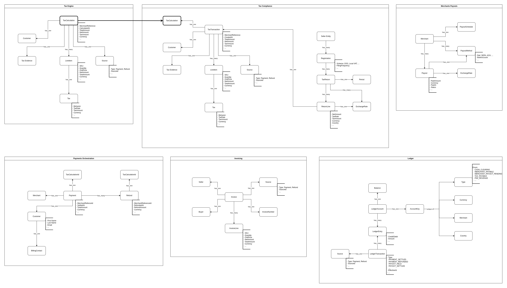

MoR System Design
Conceptual Data Model
It is in fact conceptual - its goal is to show the main domain entities that a certain Bounded Context requires for its business logic.
This diagram is not intended to represent the actual DB schema - it lacks many of the technical aspects (ids, timestamps, foreign keys, indexes, etc).
The main goal is, again, to represent communications - this time based on the data structures (system form).

In my example there are almost no communications between contexts at the data model level.
Mostly because I suppose that enough information can be transmitted in the payload of the business events, and a separate data model streaming is not necessary here, especially with the chosen architectural style (more on that below).
The only data structure that needs to get across context boundaries is TaxCalculation.
When Payments Orchestration publishes the "Payment Captured" event, it provides the taxCalculationId that was used to create this payment. The Tax Compliance context then needs to request the calculation from the Tax Engine context to convert it into a transaction.